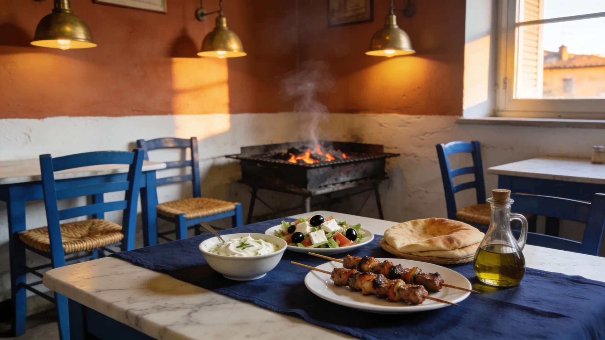
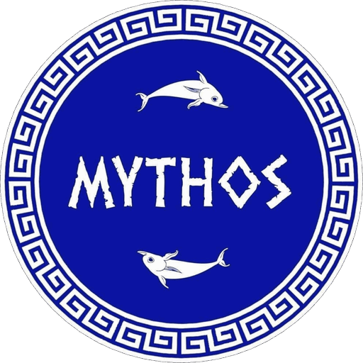
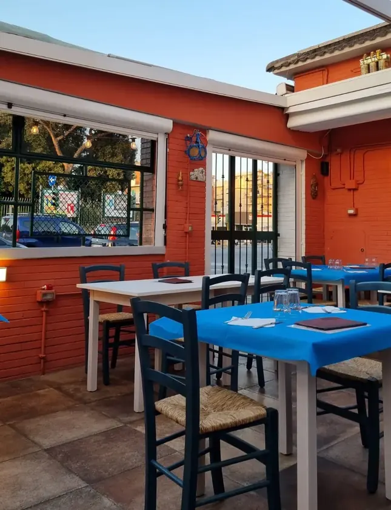
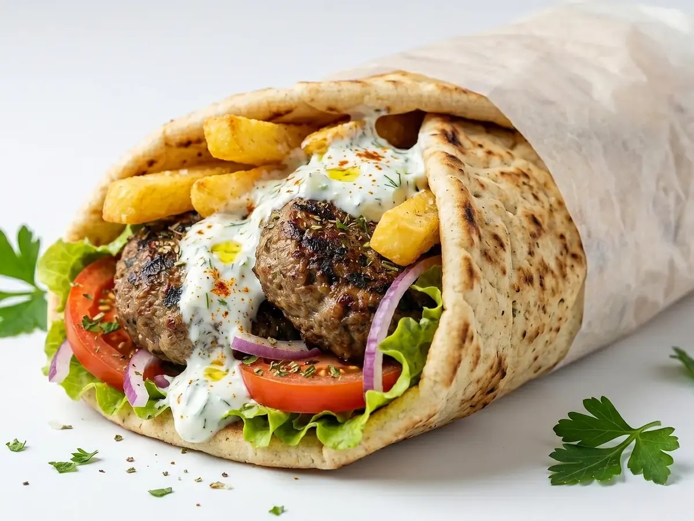
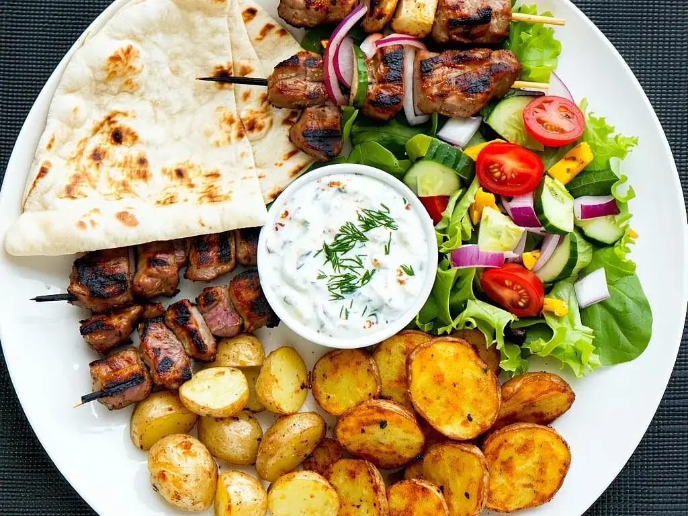
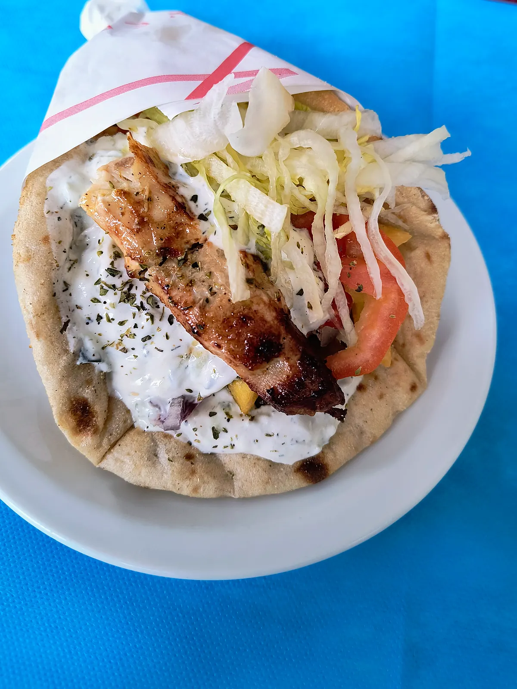
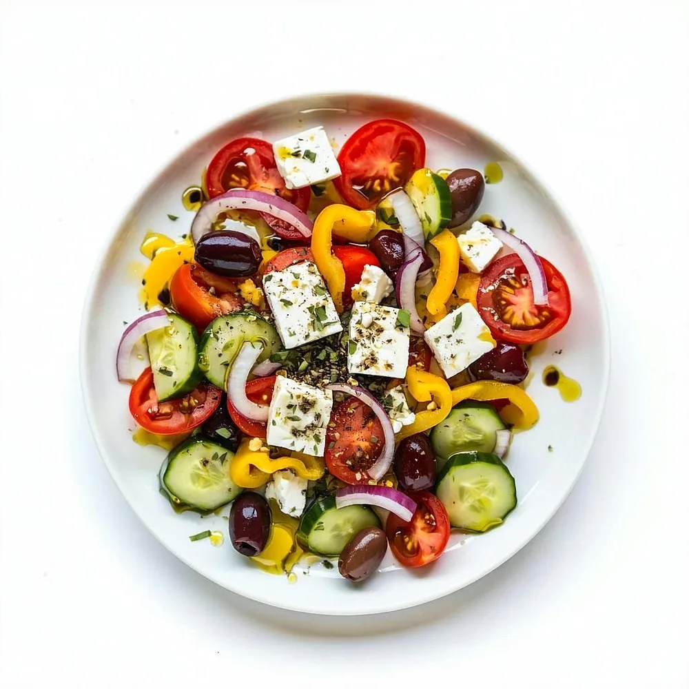
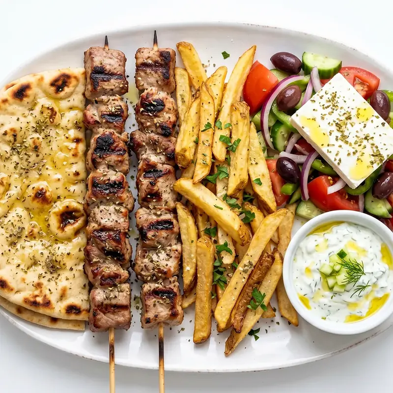
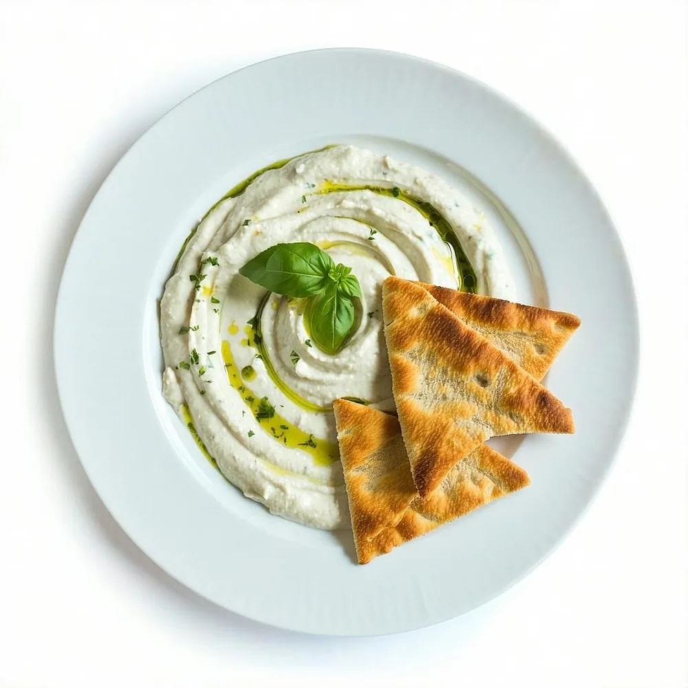
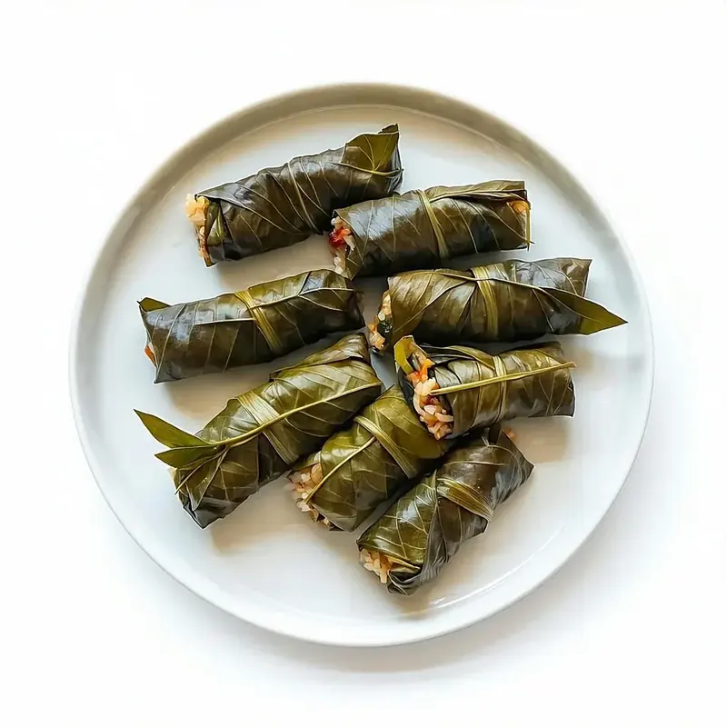

Mythos — Cucina Greca
Gyros, souvlaki e moussaka su Via Tuscolana.
La griglia, le pite, i meze e i dolci: cucina greca di quartiere, a pranzo e a cena.
Prenota un tavolo Vedi il menù
oppure chiamaci 06 8777 4778
Il ristorante
Piatti greci, senza giri di parole.
Gyros e pita gyros, souvlaki dalla griglia, moussakà, tzatziki, dolmades, saganaki e insalata greca. E, per finire, il baklava.
Siamo su Via Tuscolana 596, a due passi dalla fermata Arco di Travertino della metro A. A pranzo e a cena, tutti i giorni tranne il lunedì. Preferisci restare a casa? Consegniamo con Just Eat.

I piatti
Quello che esce dalla cucina.
-

Gyros
-

Dalla griglia
-

Pita gyros
-

Insalata greca
-

Souvlaki
-

Tzatziki
-

Dolmades
-
Baklava
Prenota
Un tavolo, in meno di un minuto.
Scegli il giorno, il servizio e quante siete. Ti diamo subito un codice: tienilo da parte, serve per annullare.
Prenota un tavoloPreferisci il telefono? Chiamaci allo 06 8777 4778
Menù
La carta per intero.
Pite, piatti, meze e dolci: la carta completa sta su una pagina a parte, così resta veloce da leggere al telefono.
Vedi il menùOrdini a casa? Le consegne passano da Just Eat.
Dove siamo
Via Tuscolana 596, Roma.
Metro A, fermata Arco di Travertino: da lì sono due passi lungo la Tuscolana.
- Indirizzo Via Tuscolana 596, Roma
- Metro Metro A, Arco di Travertino
- Telefono 06 8777 4778
- Chiuso Lunedì — pranzo e cena il resto della settimana
- Mappa Apri in Google Maps